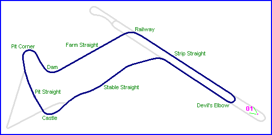
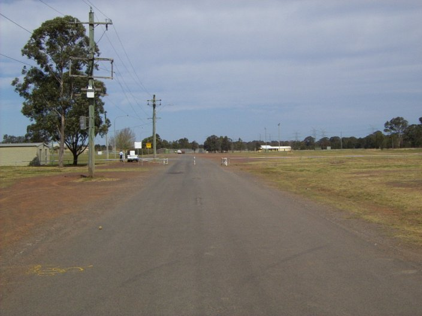
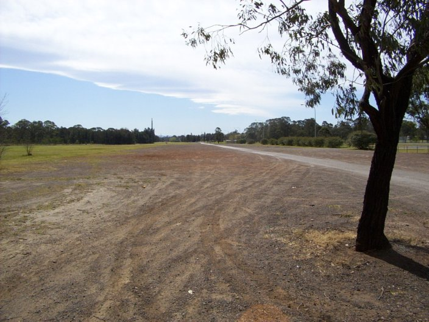
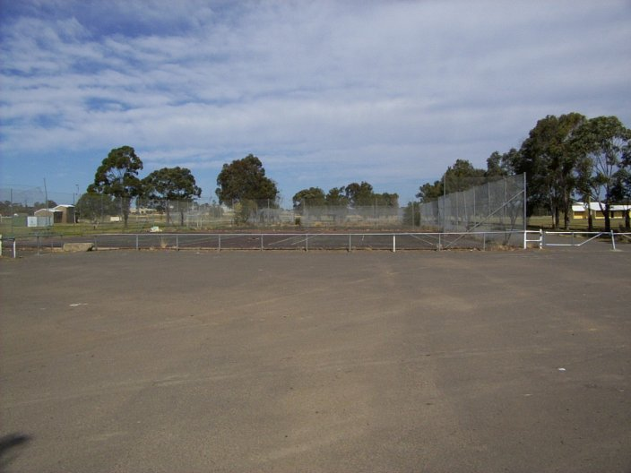
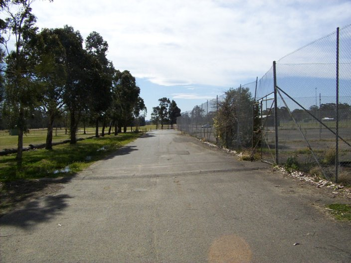
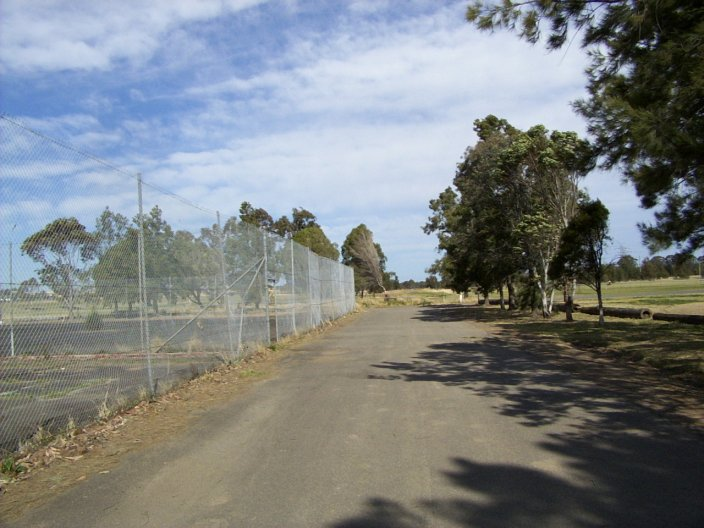
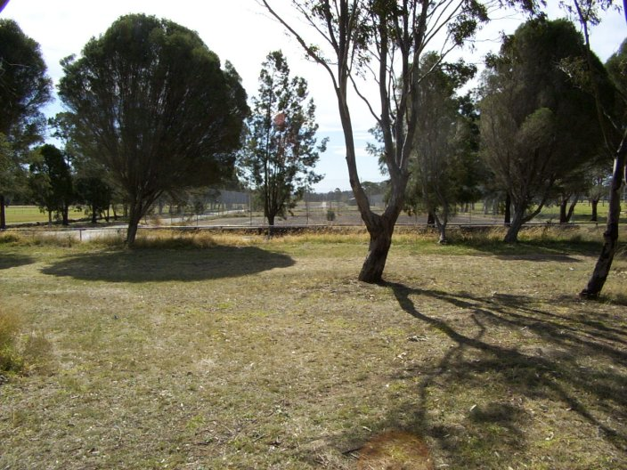
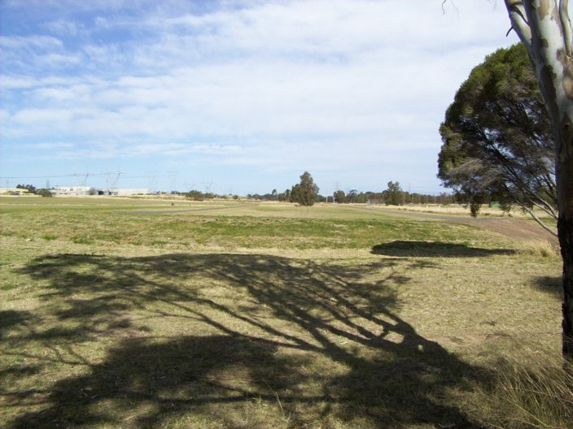

Strip Straight
|| Contents | Strip Straight | Farm Straight & Railway Corner | Stable Straight | Strip Return Curve || Home ||

Numbers indicate the region where the photographs were taken. Click on direct links
below:
| 01 | 02 | 03 | 15 | 16 | 14 | 13 |

#01 - Looking down the old airstrip, towards the 'Devil's Elbow' hairpin

#02 - Looking back up the old airstrip towards the 'Devil's Elbow'

#03 - The Whalan Reserve sports complex has been established on the strip straight

#15 - Alongside the Whalan Reserve tennis courts, looking back down the strip

#16 - Again, alongside the tennis courts, this time looking towards railway corner

#14 - On the airstip, looking back down towards the tennis courts.

#13 - The run down to railway corner
Photographs ©Conrad Zalewski. Reproduced here with kind permission.